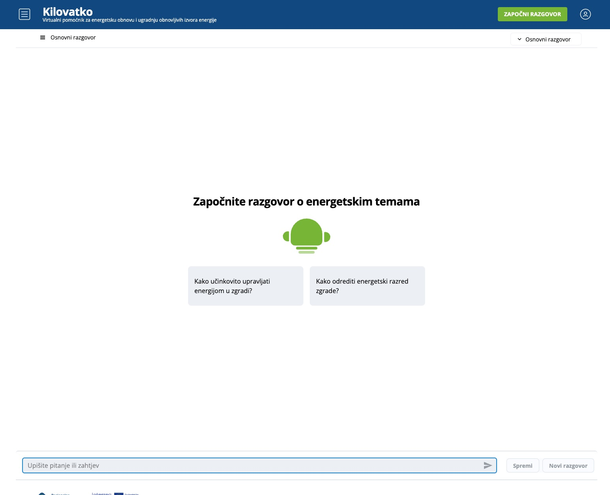
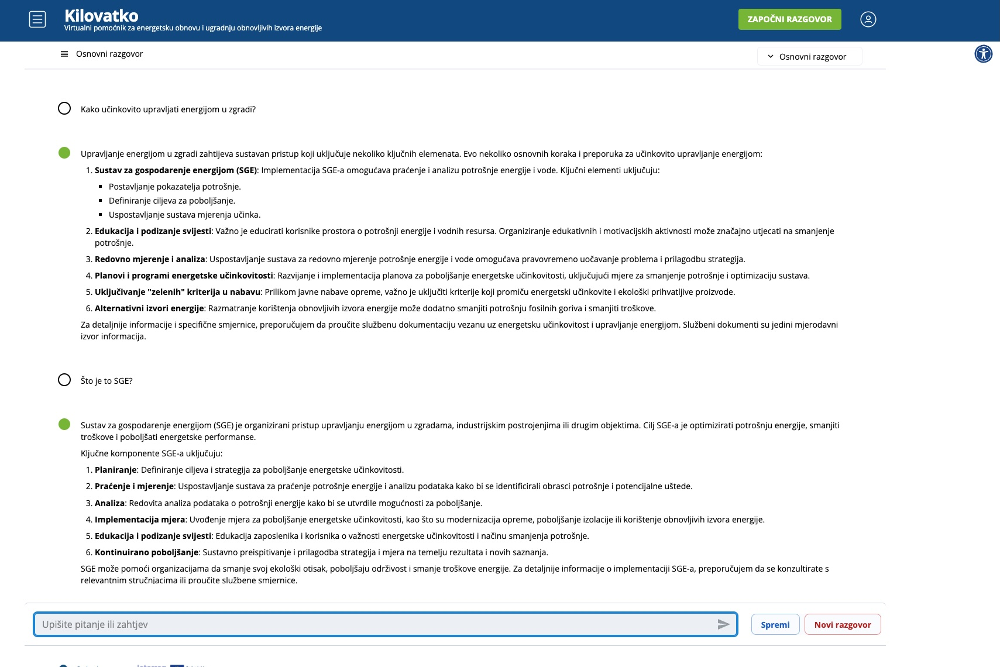
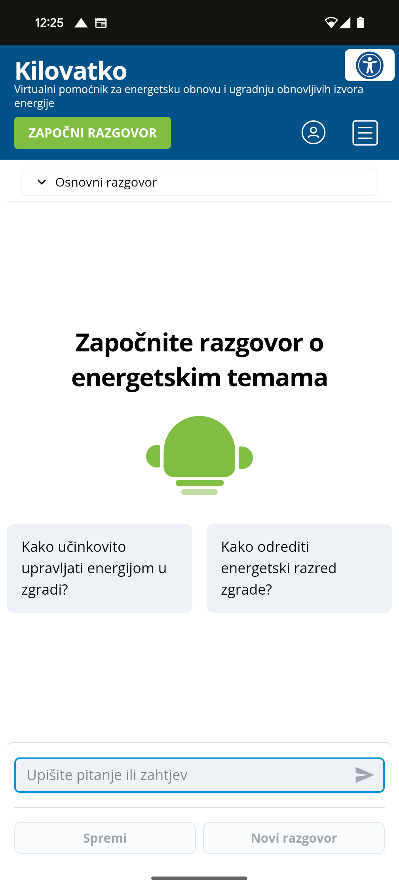
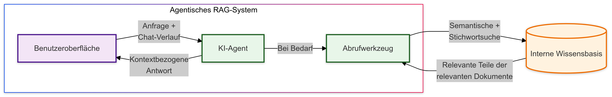
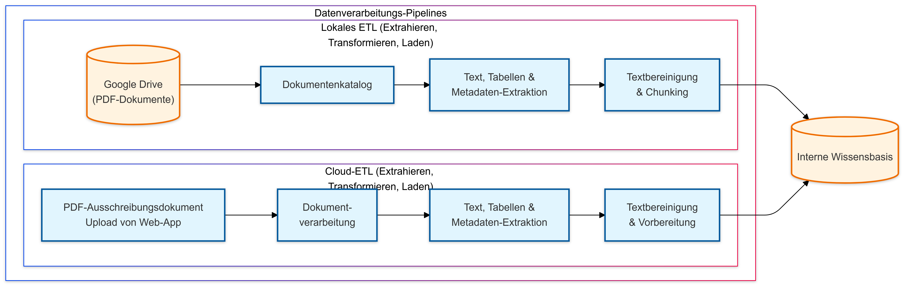

PROFESSIONELLE PROJEKTE (2024–2025)
Entwicklung von produktionsreifen KI-Systemen und strategische KI-Beratung für Unternehmenskunden.
Unternehmensberatung
-
KI-Beratung im Bankensektor – HPB d.d. (2025)
KI-Strategieberatung für die Bankführung—Vorstandsmitglied und Bereichsleiter.
-
Pharmazeutische KI-Beratung & RAG-PoC – Belupo d.d. (2024–2025)
KI-Strategieberatung und Schulung für F&E-Abteilung und Führungskräfte (2025). Zuvor RAG-Chatbot Proof-of-Concept für über 160 Medikamenten-PDFs mit LangGraph, Weaviate Hybrid-Suche, Multi-LLM-Unterstützung (2024).
- Tech-Stack: LangGraph State Machine, Weaviate Vektordatenbank mit 6 spezialisierten Collections, Multi-LLM-Unterstützung (Claude, Gemini, GPT-4), Streamlit UI mit Async-Streaming
Full-Stack KI-Anwendungen
-
Baukoordinierungsplattform (Q4 2025)
Full-Stack-Anwendung zur Ablösung manueller Excel-Workflows für die Kreisverwaltung. Reduzierung der Suchzeit von 10-15 Min. auf <30 Sek. 5-Wochen-Lieferung.
- Tech-Stack: FastAPI, React 19/TypeScript, PostgreSQL 17 mit JSONB, Firebase Auth, GCP Cloud Run
- Features: Datenmigration aus mehreren Excel-Quellen, Multi-Format Excel/PDF-Export mit kroatischer Lokalisierung, 9-Tab Detailansicht
-
Medizinisches Transkriptionssystem (2025)
Desktop-Anwendung für kroatische medizinische Diktate verschiedener Fachrichtungen. Gemini-KI-Integration, Echtzeit-Transkription mit Auto-Typing, Vorlagensystem.
- Tech-Stack: Python/Tkinter, Google Gemini 2.5 Pro via Vertex AI, Firebase Auth + Cloud Functions, GCP-Deployment
- Features: Globale Hotkeys, Optimierung für kroatische medizinische Terminologie, pytest-Tests mit 95% Coverage
-
Energieeffizienz-RAG-Plattform – VIREAS (2024–2025)
Agentisches RAG-System für erneuerbare Energien und Energieeffizienzberatung für Bürger, entwickelt für regionale Energieagentur. Enthält Prefect ETL-Pipeline und MCP-Server für Claude Desktop-Integration.
- Tech-Stack: FastAPI + LangGraph, Weaviate Hybrid-Suche, Voyage AI Reranking, Multi-LLM-Unterstützung (Claude, Gemini 2.5, GPT-4, Groq), React 19/Vite Frontend
- Features: SSE-Streaming-Chat, Ausschreibungsdokument-Management, Firebase Auth mit RBAC, Nutzungskontingent-System
- Plattform-Übersicht | Mobile Version | Live-Seite
Screenshots:



Architektur:


KI-Automatisierung & Datenverarbeitung
-
Stücklisten-Extraktionssystem (2025)
Automatisierte Stücklistenextraktion aus deutschsprachigen Fertigungsdokumenten. Reduzierung des 3-4-stündigen manuellen Prozesses auf Minuten.
- Tech-Stack: KI-gestützte Dokumentenextraktion, Python (pandas, openpyxl, reportlab), Multi-Format-Ausgabe (Excel/PDF/JSON)
- Features: Hierarchieverarbeitung, Materialaggregation, Standardblechoptimierung, EN-Normen-Compliance-Tracking
-
Automatisierte Content-Generierung (2025)
Blog-Automatisierung mit LangGraph 8-Knoten-Workflow + Perplexity-Rechercheintegration. Benutzerdefinierte Vertex AI Fine-Tuning-Pipeline für Gemini. Video-Pipeline für TikTok/Reels mit N8N.
- Blog-Pipeline: Duale Generierungspfade (feinabgestimmtes Gemini / Multi-Agent), KI-gestützte interne Verlinkung, SEO-Metadaten-Generierung
- Fine-Tuning: Benutzerdefinierter Vertex AI Supervised Fine-Tuning Workflow
- Video-Pipeline: N8N-Orchestrierung, Gemini TTS, Imagen4 Bildgenerierung, Shotstack Videokomposition
-
Text-to-SQL für Industrieproduktion (2025)
Natürliche Sprache zu SQL mit LangGraph und Open-Source-LLMs (Ollama). Ermöglicht Betreibern die Abfrage von Chargendaten mittels natürlicher Sprache statt SQL.
- Tech-Stack: LangGraph agentische Workflows, Ollama (Gemma 3 27B, Qwen2.5 Coder 32B), Streamlit UI, SQL Server
- Features: 8-Kategorien Query-Klassifizierung, SQL-Sicherheitsvalidierung, Auto-Visualisierung mit Plotly
Webseiten
-
SmartWay Design Portal (2025/6)
Full-Stack-E-Content-Plattform für ein Elektrotechnik-Planungsunternehmen. Content-Store mit Banküberweisung-Zahlungsablauf und automatisierter Kaufverfolgung.
- Newsletter: Integrierter Composer mit Block-Editor, Abonnentenverwaltung, CSV-Import, Batch-Versand und automatischer Willkommens-E-Mail — zwei Marken über ein Admin-Panel bedient
- Admin: Rollenbasiertes Dashboard, DSGVO-konforme Kontoverwaltung
- Tech-Stack: React 18/TypeScript, Firebase (Auth, Firestore, Cloud Functions, Storage), Tailwind CSS, shadcn/ui
- techXflow Unternehmenswebsite (2025) – Mehrsprachige KI-Beratungs-Website. React 19/TypeScript, Tailwind CSS 4, dreisprachig (EN/DE/HR). Live-Seite
FRÜHERE & PERSÖNLICHE PROJEKTE
-
StudyBuddy Bildungs-App (2023)
Full-Stack-KI-Lernassistent mit OCR-zu-Q&A-Workflows, implementiert bevor ChatGPT ähnliche multimodale Funktionen anbot. Foto-Upload → OCR → KI-generierte Frage-Antwort-Paare mit kontextbezogenen Folgegesprächen.
- Backend: Flask/Gunicorn REST API, Google Cloud Vision OCR, OpenAI GPT für Q&A-Generierung, ChromaDB RAG, Firestore, Firebase Auth mit rollenbasiertem Zugriff
- Frontend: Flutter Cross-Platform-App (iOS, Android, Web, macOS, Linux, Windows), mehrsprachige Unterstützung (EN/DE/HR/HU)
- GitHub Repository
- Chatbot RAG Demo (2024) – FastAPI-Backend für webbasierten Chat mit Firebase Auth, Firestore, WebSockets, LLamaIndex RAG.
- Maschinelles Lernhandbuch (2024) – Strukturierte ML-Methodik basierend auf Kaggles Titanic-Datensatz. GitHub
- Flutter OpenAI App (2023) – GPT Chat, Whisper und DALL-E Integration. GitHub
- Roboterarm-System (2019) – Raspberry PI mit Python GUI für Fischertechnik Roboterarm-Steuerung. GitHub
- Heimautomatisierung (2020–2021) – ComfortClick-basiertes System mit integrierter Sicherheit (DSC) und adaptiver Heizung über KNX/Modbus.
- Umweltüberwachung (2020) – Raspberry PI Webserver für Temperatur-, Feuchtigkeits- und PM2.5/PM10-Visualisierung.